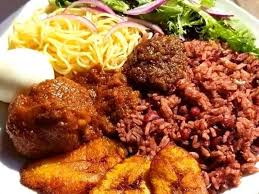

Waakye
Home

Description
Waakye, a popular Ghanaian dish, translates to "rice and beans" in Hausa, the contraction of "shinkafa da wake".
It's a staple food, often prepared with a distinctive reddish-brown color due to the use of Waakye leaves or mill.
Ingredients
- Rice
- Black eyed peas
- Sorghum leaves
- baking soda
- salt
- oil
Steps
- Soak the Beans Soak black-eyed peas in water for several hours or overnight to soften them
- Cook the Beans Add the soaked beans to a pot with water and sorghum leaves (or millet leaves).
Bring to a boil and then simmer until the beans are tender.
- Add Rice Once the beans are cooked, add rinsed rice and water to the pot.
- The mixture is simmered until both the beans and rice are cooked through
- Season Season with salt and baking soda if desired.